<!doctype html>
<html lang="ro">
<head>
<meta charset="utf-8">
<meta name="viewport" content="width=device-width, initial-scale=1, viewport-fit=cover">
<title>Misiunea Machetă</title>
<meta name="description" content="Lecție-joc pentru clasa a VII-a: imagini, tabele și pagina în editorul de texte, până la o diplomă făcută după specificații.">
<link rel="preconnect" href="https://fonts.googleapis.com">
<link rel="preconnect" href="https://fonts.gstatic.com" crossorigin>
<link rel="stylesheet" href="https://fonts.googleapis.com/css2?family=Newsreader:ital,opsz,wght@0,6..72,500..800;1,6..72,500..700&family=Instrument+Sans:wght@400;600;700&family=Spline+Sans+Mono:wght@500;600&display=swap">
<link rel="stylesheet" href="../_motor/motor.css">
<style>
:root{
  --desk:#F1ECEE; --paper:#FFFFFF; --paper2:#F8F2F4; --line:#E1D4D9;
  --ink:#251A1E; --ink2:#6B5A60; --accent:#A3174F; --accentInk:#FFFFFF; --sel:#F7DDE7;
  --mark:#FFE38A; --markInk:#251A1E; --ok:#1C7248; --okbg:#E2F3E8; --bad:#B42318; --badbg:#FBE7E4;
  --fd:"Newsreader",Georgia,"Times New Roman",serif; --fb:"Instrument Sans","Segoe UI",system-ui,sans-serif; --fm:"Spline Sans Mono",Consolas,monospace;
}
@media (prefers-color-scheme:dark){:root:not([data-theme="light"]){
  --desk:#161113; --paper:#211A1D; --paper2:#2B2226; --line:#3E3338; --ink:#F0E6EA; --ink2:#B6A4AB;
  --accent:#F27DAA; --accentInk:#1A1013; --sel:#4A2335; --mark:#F2C94C; --markInk:#251A1E;
  --ok:#6FD19A; --okbg:#173226; --bad:#FF8A80; --badbg:#3B1D1B;
}}
:root[data-theme="dark"]{
  --desk:#161113; --paper:#211A1D; --paper2:#2B2226; --line:#3E3338; --ink:#F0E6EA; --ink2:#B6A4AB;
  --accent:#F27DAA; --accentInk:#1A1013; --sel:#4A2335; --mark:#F2C94C; --markInk:#251A1E;
  --ok:#6FD19A; --okbg:#173226; --bad:#FF8A80; --badbg:#3B1D1B;
}
/* tema jocului: rigla editorului, cu zonele marginilor hașurate la capete (doar CSS) */
.banda{display:grid;grid-template-columns:9% 1fr 9%;min-height:26px;padding:0}
.banda .mz{background:repeating-linear-gradient(135deg,var(--line) 0 2px,transparent 2px 6px)}
.banda .mz.l{border-right:2px solid var(--accent)}
.banda .mz.r{border-left:2px solid var(--accent)}
.banda .tx{display:flex;justify-content:space-between;align-items:flex-end;padding:0 4px 2px;font-family:var(--fm);font-size:.62rem;color:var(--ink2);
  background:repeating-linear-gradient(90deg,var(--ink2) 0 1px,transparent 1px 12px) bottom/100% 5px no-repeat}
.banda .tx span{padding-bottom:5px}
@media (max-width:600px){.banda .tx span:nth-child(even){display:none}}
h1{font-weight:800;letter-spacing:-.02em}
h1 em{color:var(--accent);font-weight:600}
h2{font-weight:700}
</style>
</head>
<body>
<script src="../_motor/motor.js"></script>
<script>
/* Tipul de întrebare „pagina”: elevul așază o pagină (orientare, margini, încadrarea imaginii, structura tabelului)
   după o specificație și vede foaia pe loc.
   Întrebare: {t:'pagina', q, why, parti:['orientare','margini','imagine','tabel'], imbinare?:true,
               cere:{orientare?, marg?:[min,max], stangaMaiMare?, incadrare?:[moduri acceptate], incadrareCe?,
                     tabel?:{cap:[...], date:[[...]], titlu?, latCol?:cm}}, start?:{...}}
   Verificare pe COMPORTAMENT: lățimea tabelului (coloane × lățimea unei coloane) se compară cu lățimea foii minus
   marginile alese; rândurile necesare se numără din date + antet + rândul îmbinat; marginile se compară cu intervalul.
   Nu există o soluție memorată: rezolvarea automată CAUTĂ o combinație care trece aceeași verificare,
   iar orice combinație care respectă specificația e acceptată. */
const JocPagina=(function(){
'use strict';
const MARG=[1,1.5,2,2.5,3,3.5];
const INC=[['aliniat','În linie cu textul'],['patrat','Pătrat'],['strans','Strâns'],['susjos','Sus și jos'],['spate','În spatele textului']];
const EFECT={aliniat:'imaginea stă în rând, ca o literă',patrat:'textul curge pe lângă imagine',strans:'textul curge pe lângă imagine, lipit de ea',
  susjos:'textul se oprește deasupra imaginii și continuă dedesubt',spate:'imaginea stă sub text, ca un fundal'};
const fmt=x=>String(Math.round(x*100)/100).replace('.',',');
const latime=o=>o==='peisaj'?29.7:21, inaltime=o=>o==='peisaj'?21:29.7;
const numeInc=k=>INC.find(x=>x[0]===k)[1];
const CSS=`.pg-wrap{display:flex;flex-direction:column;align-items:center;gap:6px;margin:0 0 14px}
.pg-sheet{position:relative;background:#FDFBFA;border:1px solid var(--line);box-shadow:0 2px 0 var(--line),0 8px 22px rgba(0,0,0,.08);overflow:hidden;container-type:inline-size}
.pg-sheet.portret{width:min(100%,240px);aspect-ratio:21/29.7}
.pg-sheet.peisaj{width:min(100%,400px);aspect-ratio:29.7/21}
.pg-area{position:absolute;outline:1px dashed #A3174F;display:flex;flex-direction:column;gap:2cqw}
.pg-tt{display:block;height:3.2cqw;width:55%;margin:0 auto .8cqw;background:#3A2E33;border-radius:1px;flex:none}
.pg-ln{display:block;height:1.4cqw;background:#BBAFB4;border-radius:1px;flex:none}
.pg-row{display:flex;align-items:center;gap:1.5cqw}
.pg-row .pg-ln{flex:1 1 auto}
.pg-img{display:block;flex:none;width:32%;aspect-ratio:4/3;border:1px solid #C9A3B3;
  background:radial-gradient(circle at 72% 28%,#F5B83D 0 9%,transparent 10%),linear-gradient(155deg,transparent 52%,#B8436F 53%),linear-gradient(205deg,transparent 58%,#7E2A4E 59%),#F6DCE6}
.pg-img.sm{width:8%;aspect-ratio:1}
.pg-img.wide{width:100%;aspect-ratio:3/1}
.pg-side{display:flex;gap:2.4cqw;align-items:flex-start}
.pg-side.strans{gap:.7cqw}
.pg-col{flex:1;display:flex;flex-direction:column;gap:2cqw;min-width:0}
.pg-back{position:relative}
.pg-img.bg{position:absolute;top:0;bottom:0;left:18%;width:64%;aspect-ratio:auto;opacity:.33}
.pg-back .pg-col{position:relative}
.pg-tb{border-collapse:collapse;table-layout:fixed;font:2cqw/1.15 Arial,"Segoe UI",sans-serif;color:#2A2226;flex:none;align-self:flex-start}
.pg-tb td{border:1px solid #6E5F65;padding:.3cqw .5cqw;overflow:hidden;white-space:nowrap;height:3.4cqw}
.pg-tb td.hd{background:#F1D3DF;font-weight:700}
.pg-tb td.mg{text-align:center;font-weight:700;background:#E7BDD0}
.pg-tb.over{outline:2px solid #D92D20}
.pg-cap{font-family:var(--fm);font-size:.72rem;color:var(--ink2);text-align:center;overflow-wrap:anywhere}
.pg-zoom{width:100%;overflow-x:auto;margin:0 0 14px}
.pg-zt{border-collapse:collapse;width:100%;font-size:.86rem;line-height:1.25}
.pg-zt td{border:1px solid var(--ink2);padding:4px 6px;overflow-wrap:anywhere;min-width:2.2em;height:2em}
.pg-zt td.hd{background:var(--sel);font-weight:700}
.pg-zt td.mg{background:var(--sel);font-weight:700;text-align:center;box-shadow:inset 0 -2px 0 var(--accent)}
.pg-zt tr.gol td{background:repeating-linear-gradient(135deg,transparent 0 5px,var(--paper2) 5px 10px)}
.pg-ctl{display:grid;gap:12px}
.pg-opts{display:flex;flex-wrap:wrap;gap:6px;align-items:center}
.pg-b{padding:6px 10px;border:1px solid var(--line);border-radius:6px;background:var(--paper2);font-size:.9rem;line-height:1.2;min-height:38px}
.pg-b.on{border-color:var(--accent);box-shadow:inset 0 0 0 2px var(--accent);font-weight:600}
.pg-step{display:inline-flex;align-items:center;gap:6px;margin-right:12px}
.pg-step .pg-b{min-width:38px;font-weight:700}
.pg-step output{font-family:var(--fm);min-width:1.4em;text-align:center;font-weight:600}`;

function parti(Q){return Q.parti||[]}
function arataImbinare(Q){const T=Q.cere.tabel;return parti(Q).includes('tabel')&&!!(Q.imbinare||(T&&T.titlu))}
function init(Q){
  const T=Q.cere.tabel,P=parti(Q);
  const s=Object.assign({or:'portret',ms:2,md:2,inc:'aliniat',r:2,c:2,antet:false,imb:false},Q.start||{});
  if(T&&!P.includes('tabel')){s.c=T.cap.length;s.antet=T.antet!==false;s.imb=!!T.titlu;s.r=T.date.length+(s.antet?1:0)+(s.imb?1:0)}
  if(Q.cere.incadrare&&!P.includes('imagine'))s.inc=Q.cere.incadrare[0];
  return s;
}
function problems(Q,s){
  const C=Q.cere,T=C.tabel,out=[];
  if(C.orientare&&s.or!==C.orientare)out.push(`Specificația cere foaia ${C.orientare==='peisaj'?'culcată (vedere)':'în picioare (portret)'}.`);
  if(C.marg){const[a,b]=C.marg;if(s.ms<a||s.ms>b||s.md<a||s.md>b)out.push(`Marginile trebuie să fie între ${fmt(a)} și ${fmt(b)} cm. Acum ai stânga ${fmt(s.ms)} cm și dreapta ${fmt(s.md)} cm.`)}
  if(C.stangaMaiMare&&!(s.ms>s.md))out.push('Lucrarea se îndosariază: marginea din stânga trebuie să fie mai mare decât cea din dreapta, ca găurile să nu prindă textul.');
  if(T&&T.latCol){const need=s.c*T.latCol,avail=latime(s.or)-s.ms-s.md;
    if(need>avail+1e-9)out.push(`Tabelul are nevoie de ${fmt(need)} cm pe lățime, dar între margini au rămas doar ${fmt(avail)} cm (${fmt(latime(s.or))} − ${fmt(s.ms)} − ${fmt(s.md)}). Nimic nu iese în afara marginilor.`)}
  if(C.incadrare&&!C.incadrare.includes(s.inc))out.push(`Acum ${EFECT[s.inc]}. Specificația cere altceva: ${C.incadrareCe}.`);
  if(T){
    if(s.c!==T.cap.length)out.push(`Fiecare rând are ${T.cap.length} informații (${T.cap.join(', ')}), deci tabelul are nevoie de tot atâtea coloane. Acum are ${s.c}.`);
    if(T.antet!==false&&!s.antet)out.push('Lipsește rândul de antet: fără el, cititorul nu știe ce e în fiecare coloană.');
    if(T.titlu&&!s.imb)out.push(`Titlul „${T.titlu}” trebuie să stea deasupra tuturor coloanelor, pe un rând cu celulele îmbinate.`);
    if(!T.titlu&&s.imb)out.push('Ai îmbinat celulele primului rând, dar tabelul nu are un titlu comun.');
    const need=T.date.length+(s.antet?1:0)+(s.imb?1:0);
    if(s.r<need)out.push(`Nu încap toate datele: ${need-s.r===1?'un rând rămâne':(need-s.r)+' rânduri rămân'} pe dinafară.`);
    else if(s.r>need)out.push(`Tabelul are ${s.r-need===1?'un rând gol':(s.r-need)+' rânduri goale'} la final. Un tabel îngrijit nu are rânduri goale.`);
  }
  return out;
}
function solution(Q){
  const P=parti(Q),b=init(Q),has=k=>P.includes(k),M=[2,2.5,3,1.5,3.5,1];
  const dom={or:has('orientare')?['portret','peisaj']:[b.or],ms:has('margini')?M:[b.ms],md:has('margini')?M:[b.md],
    inc:has('imagine')?INC.map(x=>x[0]):[b.inc],r:has('tabel')?[1,2,3,4,5,6,7,8,9]:[b.r],c:has('tabel')?[1,2,3,4,5,6]:[b.c],
    antet:has('tabel')?[true,false]:[b.antet],imb:arataImbinare(Q)?[false,true]:[b.imb]};
  const keys=Object.keys(dom),s={...b};
  function rec(i){if(i===keys.length)return problems(Q,s).length?null:{...s};
    for(const v of dom[keys[i]]){s[keys[i]]=v;const r=rec(i+1);if(r)return r}return null}
  const sol=rec(0);
  if(!sol)throw new Error('JocPagina: specificația nu are nicio soluție');
  return sol;
}
function describe(Q,s){
  const P=parti(Q),T=Q.cere.tabel,parts=[];
  if(P.includes('orientare'))parts.push(`foaia ${s.or}`);
  if(P.includes('margini'))parts.push(`margini de ${fmt(s.ms)} cm în stânga și ${fmt(s.md)} cm în dreapta`);
  if(P.includes('imagine'))parts.push(`încadrarea „${numeInc(s.inc)}”`);
  if(P.includes('tabel')&&T)parts.push(`tabel cu ${s.r} rânduri și ${s.c} coloane, rând de antet${s.imb?' și primul rând cu celulele îmbinate':''}`);
  return 'o variantă bună e acum pe foaie: '+parts.join('; ')+'.';
}

function render(Q,body,api){
  if(!document.getElementById('tip-pagina-css')){const st=document.createElement('style');st.id='tip-pagina-css';st.textContent=CSS;document.head.appendChild(st)}
  const esc=api.esc,P=parti(Q),has=k=>P.includes(k),T=Q.cere.tabel,s=init(Q);
  const showImg=has('imagine')||!!Q.cere.incadrare;
  function randuri(){
    const rows=[];
    if(s.imb)rows.push({mg:T.titlu||''});
    if(s.antet)rows.push({cells:T.cap,hd:true});
    T.date.forEach(d=>rows.push({cells:d}));
    const shown=rows.slice(0,s.r);
    while(shown.length<s.r)shown.push({cells:[],gol:true});
    return shown;
  }
  function tabel(cls,style){
    return `<table class="${cls}" ${style?`style="${style}"`:''}>${randuri().map(r=>r.mg!==undefined
      ?`<tr><td colspan="${s.c}" class="mg">${esc(r.mg)}</td></tr>`
      :`<tr class="${r.gol?'gol':''}">${Array.from({length:s.c},(_,k)=>`<td class="${r.hd?'hd':''}">${esc(r.cells[k]||'')}</td>`).join('')}</tr>`).join('')}</table>`;
  }
  function foaia(){
    const W=latime(s.or),H=inaltime(s.or),top=2/H*100,left=s.ms/W*100,right=s.md/W*100;
    const ln=w=>`<i class="pg-ln" style="width:${w}%"></i>`,lines=n=>Array.from({length:n},(_,k)=>ln([100,93,97,68][k%4])).join('');
    let c='<i class="pg-tt"></i>';
    if(showImg){
      if(s.inc==='aliniat')c+=`<div class="pg-row">${ln(30)}<b class="pg-img sm"></b>${ln(40)}</div>`+lines(3);
      else if(s.inc==='patrat'||s.inc==='strans')c+=`<div class="pg-side ${s.inc}"><b class="pg-img"></b><div class="pg-col">${lines(4)}</div></div>`+lines(1);
      else if(s.inc==='susjos')c+=lines(1)+'<b class="pg-img wide"></b>'+lines(2);
      else c+=`<div class="pg-back"><b class="pg-img bg"></b><div class="pg-col">${lines(5)}</div></div>`;
    }else c+=lines(3);
    if(T){
      const avail=W-s.ms-s.md,pct=T.latCol?s.c*T.latCol/avail*100:100;
      c+=tabel('pg-tb'+(pct>100.01?' over':''),`width:${pct.toFixed(2)}%`);
    }
    return `<div class="pg-wrap"><div class="pg-sheet ${s.or}" role="img" aria-label="Foaia A4 ${s.or}, cu marginea din stânga de ${fmt(s.ms)} cm și cea din dreapta de ${fmt(s.md)} cm">
      <div class="pg-area" style="top:${top.toFixed(2)}%;bottom:${top.toFixed(2)}%;left:${left.toFixed(2)}%;right:${right.toFixed(2)}%">${c}</div></div>
      <div class="pg-cap">A4 ${s.or} · lățime ${fmt(W)} cm · margini: stânga ${fmt(s.ms)}, dreapta ${fmt(s.md)}${T&&T.latCol?` · loc pentru text: ${fmt(W-s.ms-s.md)} cm`:''}</div></div>`;
  }
  const grp=(label,html)=>`<div><div class="lbl">${label}</div><div class="pg-opts">${html}</div></div>`;
  const btn=(key,val,label)=>`<button type="button" class="pg-b ${s[key]===val?'on':''}" data-${key}="${val}" aria-pressed="${s[key]===val}">${label}</button>`;
  const step=(key,label)=>`<span class="pg-step"><span>${label}</span><button type="button" class="pg-b" data-st="${key}" data-d="-1" aria-label="${label}: unul mai puțin">−</button><output data-val="${key}">${s[key]}</output><button type="button" class="pg-b" data-st="${key}" data-d="1" aria-label="${label}: unul în plus">+</button></span>`;
  const tog=(key,label)=>`<button type="button" class="pg-b ${s[key]?'on':''}" data-tg="${key}" aria-pressed="${s[key]}">${label}: ${s[key]?'da':'nu'}</button>`;
  function draw(){
    body.innerHTML=foaia()
      +(has('tabel')?`<div class="lbl">Tabelul, mărit</div><div class="pg-zoom">${tabel('pg-zt')}</div>`:'')
      +`<div class="pg-ctl">
        ${has('orientare')?grp('Orientarea foii',btn('or','portret','Portret')+btn('or','peisaj','Vedere (peisaj)')):''}
        ${has('margini')?grp('Marginea din stânga (cm)',MARG.map(m=>btn('ms',m,fmt(m))).join(''))+grp('Marginea din dreapta (cm)',MARG.map(m=>btn('md',m,fmt(m))).join('')):''}
        ${has('imagine')?grp('Încadrarea textului față de imagine',INC.map(([k,n])=>btn('inc',k,n)).join('')):''}
        ${has('tabel')?grp('Structura tabelului',step('r','Rânduri')+step('c','Coloane'))+grp('Rânduri speciale',tog('antet','Rând de antet')+(arataImbinare(Q)?tog('imb','Primul rând cu celulele îmbinate'):'')):''}
      </div>`;
    body.querySelectorAll('[data-or]').forEach(b=>b.onclick=()=>{if(api.done())return;s.or=b.dataset.or;draw()});
    body.querySelectorAll('[data-ms]').forEach(b=>b.onclick=()=>{if(api.done())return;s.ms=+b.dataset.ms;draw()});
    body.querySelectorAll('[data-md]').forEach(b=>b.onclick=()=>{if(api.done())return;s.md=+b.dataset.md;draw()});
    body.querySelectorAll('[data-inc]').forEach(b=>b.onclick=()=>{if(api.done())return;s.inc=b.dataset.inc;draw()});
    body.querySelectorAll('[data-st]').forEach(b=>b.onclick=()=>{if(api.done())return;const k=b.dataset.st,max=k==='r'?9:6;s[k]=Math.min(max,Math.max(1,s[k]+ +b.dataset.d));draw()});
    body.querySelectorAll('[data-tg]').forEach(b=>b.onclick=()=>{if(api.done())return;const k=b.dataset.tg;s[k]=!s[k];draw()});
  }
  draw();
  const nav=api.checkButton(()=>{
    const pr=problems(Q,s);
    if(!pr.length){nav.innerHTML='';api.resolve(true)}
    else{api.resolve(false,pr.slice(0,2).join(' ')+(pr.length>2?` (mai sunt ${pr.length-2})`:''));
      api.revealButton(()=>{Object.assign(s,solution(Q));draw();nav.innerHTML='';api.giveUp(describe(Q,s))})}
  });
}
function rezolva(Q,body){aplica(Q,body,solution(Q))}
/* greșeala tipică a copilului, pornind de la o foaie altfel corectă: uită să numere rândul de antet/titlu,
   lasă foaia pe portret („orientarea obișnuită”) sau pune margini egale la o lucrare de îndosariat.
   Se alege prima greșeală pe care verificarea chiar o respinge (poarta cere apoi „Nu încă”). */
function gresit(Q,body){
  const sol=solution(Q),P=parti(Q),cand=[];
  if(P.includes('tabel'))cand.push({...sol,r:sol.r-1});
  if(P.includes('orientare'))cand.push({...sol,or:'portret'});
  if(P.includes('margini'))cand.push({...sol,ms:2,md:2},{...sol,ms:1,md:1});
  if(P.includes('imagine'))cand.push({...sol,inc:'patrat'});
  const g=cand.find(s=>problems(Q,s).length);
  if(!g)throw new Error('JocPagina: nu am găsit o greșeală tipică pentru această întrebare');
  aplica(Q,body,g);
}
function aplica(Q,body,sol){
  const P=parti(Q),q=sel=>body.querySelector(sel);
  if(P.includes('orientare'))q(`[data-or="${sol.or}"]`).click();
  if(P.includes('margini')){q(`[data-ms="${sol.ms}"]`).click();q(`[data-md="${sol.md}"]`).click()}
  if(P.includes('imagine'))q(`[data-inc="${sol.inc}"]`).click();
  if(P.includes('tabel')){
    ['r','c'].forEach(k=>{for(let i=0;i<20;i++){const cur=+q(`[data-val="${k}"]`).textContent;if(cur===sol[k])break;q(`[data-st="${k}"][data-d="${cur<sol[k]?1:-1}"]`).click()}});
    ['antet','imb'].forEach(k=>{const t=q(`[data-tg="${k}"]`);if(t&&(t.getAttribute('aria-pressed')==='true')!==sol[k])t.click()});
  }
}
return {render,rezolva,gresit,problems,solution};
})();

/* Acoperirea programei (OMEN 3393/2017, domeniul „Editor de texte”), textul EXACT din curriculum.json.
   Împreună cu word-vii (acoperire.json) acoperă VII-U1; vezi jocuri/ACOPERIRE.md. */
const PROG={
  gestionare:'Operații pentru gestionarea unui document: creare, deschidere, vizualizare, salvare, închidere',
  obiecte:'Obiecte într-un document: text, imagini, tabele',
  formatare:'Operaţii de formatare a unui document: text, imagine, tabel, pagină',
  reguli:'Reguli generale de tehnoredactare şi estetică a paginii tipărite',
  specificatii:'Reguli de lucru în realizarea unui document conform unor specificații (dimensiune pagină, dimensiune font, dimensiune imagine, format tabel)'
};
const LEVELS=[
{t:'Obiecte într-un document',lectii:[4],continuturi:[PROG.obiecte],text:`
<p>Un document nu e doar text. În el așezi <mark>obiecte</mark>: <strong>text</strong>, <strong>imagini</strong>, <strong>tabele</strong>, forme. Fiecare are regulile lui de așezare.</p>
<p>Obiectele noi le adaugi din fila <mark>Inserare</mark> (Insert): <strong>Imagini</strong> pentru o poză din calculator, <strong>Tabel</strong> pentru un tabel. O imagine copiată o poți lipi și cu <kbd>Ctrl</kbd>+<kbd>V</kbd>.</p>
<p>Alegi obiectul după ce ai de arătat: <strong>imaginea</strong> arată cum arată ceva, <strong>tabelul</strong> așază <mark>date</mark> pe rânduri și coloane, iar <strong>textul</strong> explică.</p>
<p>O imagine luată de pe internet are un autor. Sub ea scrii <strong>sursa</strong>, adică de unde ai luat-o.</p>
<figure class="captura"><a href="../word-obiecte-vii/img/inserare-imagini-tabel.webp" target="_blank">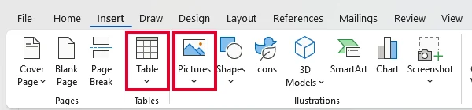</a>
<figcaption>Fila <b>Inserare</b> (Insert): de aici pui un <b>Tabel</b> (Table) sau o <b>Imagine</b> (Pictures).</figcaption></figure>
<figure class="captura"><a href="../word-obiecte-vii/img/obiecte-document.webp" target="_blank">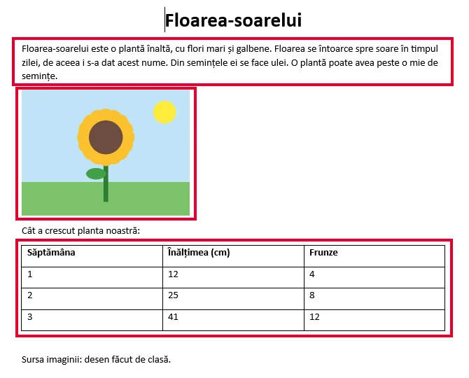</a>
<figcaption>Același document, trei obiecte: <b>textul</b>, <b>imaginea</b>, <b>tabelul</b>.</figcaption></figure>`,
qs:[
 {t:'choice',q:'Vrei să pui în referat o fotografie salvată în calculator. De pe ce filă pornești?',o:['Inserare','Pornire','Fișier','Vizualizare'],ok:0,why:'Pe fila Inserare stau obiectele pe care le adaugi în document: imagini, tabele, forme. Pe Pornire sunt formatările de zi cu zi, iar Fișier ține salvarea și tipărirea.'},
 {t:'classify',q:'Ce obiect folosești pentru fiecare informație?',cats:['Tabel','Imagine','Text'],items:[['Notele a 5 elevi la 3 probe',0],['Cum arată frunza de arțar',1],['Orarul clasei, pe zile și ore',0],['Traseul excursiei, pe hartă',1],['Povestea excursiei, pe scurt',2],['De ce e bine să reciclăm',2]],why:'Datele care se citesc pe rânduri și pe coloane merg în tabel. Ce trebuie văzut merge în imagine. Ce trebuie explicat sau povestit rămâne text.'},
 {t:'tf',q:'Ca să centrezi un titlu, cel mai bine îl pui într-un tabel cu o singură celulă.',ok:false,why:'Fals. Titlul se centrează cu butonul de aliniere. Un tabel pus doar ca să mute text se strică ușor când schimbi marginile sau fontul, iar tabelul e făcut pentru date.'},
 {t:'choice',q:'Ai pus în referat o fotografie găsită pe un site. Ce mai scrii sub ea?',o:['Sursa, adică de unde e luată','Numele tău, ca autor al ei','Nimic, se înțelege singură','Data la care ai găsit-o'],ok:0,why:'Fotografia are un autor, iar sursa arată cinstit de unde ai luat-o. Așa cititorul o poate și verifica.'},
 {t:'match',q:'Leagă fiecare obiect de rolul lui în document.',pairs:[['Imaginea','arată cum arată ceva'],['Tabelul','așază date pe rânduri și coloane'],['Textul','explică și povestește'],['Sursa','spune de unde e luată o imagine']],why:'Fiecare obiect are treaba lui. Când alegi obiectul potrivit, documentul se înțelege dintr-o privire.'}
]},
{t:'Imaginea și încadrarea textului',lectii:[7],continuturi:[PROG.formatare],text:`
<p>O imagine selectată are <mark>mânere</mark> pe margini. O mărești trăgând de un <strong>colț</strong>: așa își păstrează forma. Mânerul din mijlocul unei laturi o <strong>turtește</strong>.</p>
<p>Cel mai important reglaj e <mark>încadrarea textului</mark>, adică felul în care stă textul față de imagine:</p>
<ul>
<li><strong>În linie cu textul</strong> (In Line with Text): imaginea stă în rând, ca o literă;</li>
<li><strong>Pătrat</strong> (Square) sau <strong>Strâns</strong> (Tight): textul curge pe lângă imagine;</li>
<li><strong>Printre</strong> (Through): ca la Strâns, dar textul poate intra și în golurile imaginii;</li>
<li><strong>Sus și jos</strong> (Top and Bottom): textul se oprește deasupra imaginii și continuă dedesubt;</li>
<li><strong>În spatele textului</strong> (Behind Text): imaginea devine fundal, deci textul trebuie să se citească bine;</li>
<li><strong>În fața textului</strong> (In Front of Text): imaginea stă peste text și îl acoperă.</li>
</ul>
<p>Când selectezi imaginea, lângă ea apare butonul <mark>Opțiuni aspect</mark> (Layout Options), cu aceleași opțiuni. Le găsești și pe fila <strong>Format imagine</strong> (Picture Format), la <strong>Încadrare text</strong> (Wrap Text). Numele pot diferi puțin de la o versiune la alta: ține mouse-ul pe pictogramă ca să vezi cum se numesc la tine.</p>
<figure class="captura"><a href="../word-obiecte-vii/img/optiuni-aspect.webp" target="_blank">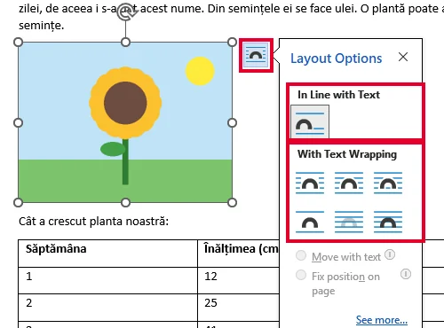</a>
<figcaption>Imaginea selectată are <b>mânere</b> pe colțuri și pe laturi. Butonul încadrat deschide <b>Opțiuni aspect</b> (Layout Options): sus, În linie cu textul (In Line with Text); dedesubt, cele cu încadrarea textului.</figcaption></figure>
<figure class="captura"><a href="../word-obiecte-vii/img/incadrare-text.webp" target="_blank">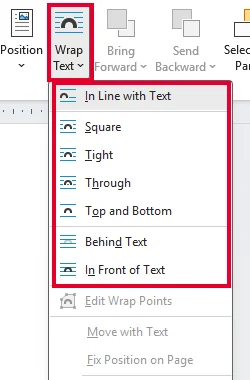</a>
<figcaption>Toate cele <b>șapte</b> opțiuni încadrate cu roșu, pe fila <b>Format imagine</b> (Picture Format) → <b>Încadrare text</b> (Wrap Text), de sus în jos: În linie cu textul (In Line with Text), Pătrat (Square), Strâns (Tight), Printre (Through), Sus și jos (Top and Bottom), În spatele textului (Behind Text), În fața textului (In Front of Text).</figcaption></figure>`,
qs:[
 {t:'choice',q:'Poza e prea mică. Cum o mărești fără să se deformeze?',o:['Tragi de mânerul dintr-un colț','Tragi de mânerul de pe latura de jos','Tragi de mânerul de pe latura din dreapta','Apeși Enter deasupra ei de câteva ori'],ok:0,why:'Mânerul din colț schimbă lățimea și înălțimea deodată, deci poza își păstrează forma. Mânerul din mijlocul unei laturi schimbă o singură dimensiune și poza se turtește.'},
 {t:'match',q:'Leagă încadrarea de ce se întâmplă cu textul.',pairs:[['În linie cu textul','imaginea stă în rând, ca o literă'],['Pătrat','textul curge pe lângă imagine'],['Sus și jos','textul sare peste rândul imaginii'],['În spatele textului','imaginea devine fundal']],why:'Numele spun ce face textul: stă în rând, curge pe lângă, sare peste imagine sau trece peste ea.'},
 {t:'classify',q:'Ce încadrare alegi în fiecare situație?',cats:['În linie cu textul','Pătrat','Sus și jos','În spatele textului'],items:[['Iconiță mică în mijlocul unei fraze',0],['Poză lângă paragraful care o explică',1],['Fotografie lată cât pagina',2],['Fundal deschis pe coperta revistei',3],['Hartă mare, cu text deasupra și dedesubt',2]],why:'Imaginea mică merge în rând, poza explicată stă lângă paragraf, imaginea lată are nevoie de tot rândul, iar fundalul stă în spatele textului.'},
 {t:'tf',q:'Cu încadrarea „Sus și jos”, textul curge pe lângă imagine, în stânga și în dreapta ei.',ok:false,why:'Fals. La „Sus și jos” textul se oprește deasupra imaginii și continuă dedesubt, deci lângă imagine rămâne loc gol. Textul curge pe lângă imagine la „Pătrat” sau „Strâns”.'},
 {t:'choice',q:'Ai pus o poză în spatele textului, dar textul abia se mai citește. Ce ajută cel mai mult?',o:['O imagine mai deschisă, cu textul pe o zonă liniștită','Textul pus pe aldin, cu imaginea neschimbată','Imaginea mărită, până acoperă toată pagina','Încă o imagine, pusă peste prima'],ok:0,why:'Textul se citește când se deosebește clar de ce e sub el. O imagine deschisă sau o zonă fără detalii îl lasă să iasă în față. Aldinul singur nu repară un fundal încărcat.'}
]},
{t:'Tabelul: rânduri, coloane, antet',lectii:[4],continuturi:[PROG.obiecte],text:`
<p>Un <mark>tabel</mark> are <strong>rânduri</strong> (orizontale) și <strong>coloane</strong> (verticale). Căsuța în care se întâlnesc se numește <mark>celulă</mark>: acolo scrii.</p>
<p>Îl creezi din <strong>Inserare → Tabel</strong>, alegând câte rânduri și câte coloane are. Un tabel cu 3 coloane și 4 rânduri are 3 × 4 = 12 celule.</p>
<p>Primul rând, cu numele coloanelor, este <mark>antetul</mark>. Fără el, cititorul nu știe ce înseamnă cifrele.</p>
<p>Cum numeri? O <strong>coloană</strong> pentru fiecare informație (Nume, Clasa, Nota), un <strong>rând</strong> pentru fiecare elev, plus rândul de antet.</p>
<p>În tabel treci la celula următoare cu <kbd>Tab</kbd>. Apăsat în <strong>ultima celulă</strong>, <kbd>Tab</kbd> adaugă un rând nou.</p>
<figure class="captura"><a href="../word-obiecte-vii/img/inserare-tabel-grila.webp" target="_blank">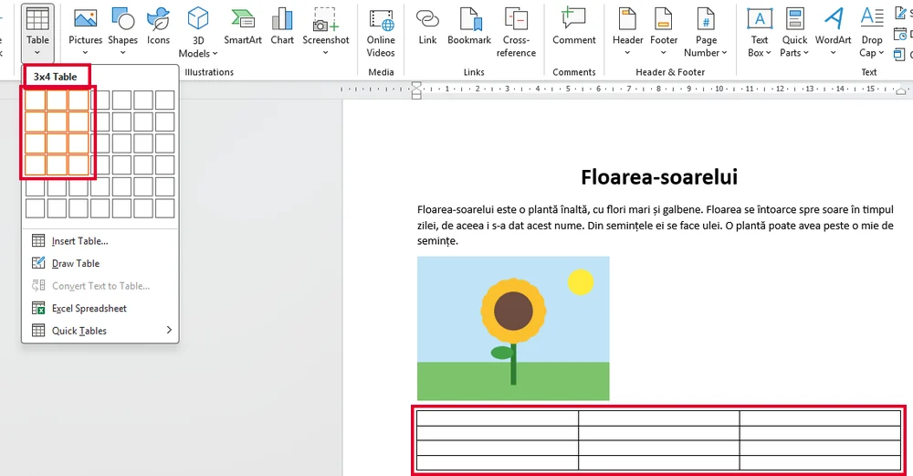</a>
<figcaption><b>Inserare</b> (Insert) → <b>Tabel</b> (Table): treci mouse-ul peste grilă. Aici sunt alese <b>3 coloane × 4 rânduri</b> („3x4 Table”), iar tabelul gol se vede deja în document.</figcaption></figure>
<figure class="captura"><a href="../word-obiecte-vii/img/tabel-antet.webp" target="_blank">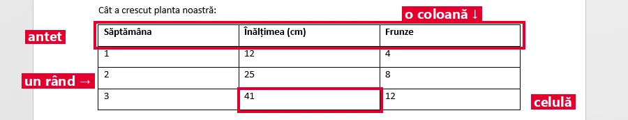</a>
<figcaption>Același tabel: <b>rândul de antet</b> (Săptămâna, Înălțimea, Frunze), un <b>rând</b>, o <b>coloană</b> și o <b>celulă</b>.</figcaption></figure>`,
qs:[
 {t:'choice',q:'Un tabel are 4 coloane și 5 rânduri. Câte celule are?',o:['20','9','45','16'],ok:0,why:'Numărul de celule e coloane × rânduri: 4 × 5 = 20. Adunarea 4 + 5 = 9 numără doar coloanele și rândurile, nu căsuțele.'},
 {t:'choice',q:'Treci în tabel 6 elevi, fiecare cu Nume, Clasa și Nota. Ce tabel alegi, cu tot cu antet?',o:['3 coloane și 7 rânduri','6 coloane și 3 rânduri','3 coloane și 6 rânduri','7 coloane și 3 rânduri'],ok:0,why:'O coloană pentru fiecare informație (3) și un rând pentru fiecare elev (6), plus rândul de antet: 7 rânduri.'},
 {t:'order',q:'Faci un tabel nou. Pune pașii în ordine.',items:['Pui cursorul unde vrei tabelul','Deschizi Inserare → Tabel','Alegi numărul de rânduri și de coloane','Scrii în celule, trecând mai departe cu Tab'],why:'Tabelul apare unde e cursorul, deci locul îl alegi primul. Abia după ce tabelul există poți scrie în celulele lui.'},
 {t:'pagina',q:'Construiește tabelul concursului de șah. Alege rândurile și coloanele, pune rândul de antet, apoi verifică. Datele le așază jocul, singur.',
  parti:['tabel'],
  cere:{tabel:{cap:['Nume','Clasa','Puncte'],date:[['Ana','7A','7'],['Bogdan','7B','5'],['Cristi','7A','6'],['Dana','7C','4']]}},
  start:{r:2,c:2},
  why:'Jocul a numărat din date: câte o coloană pentru fiecare informație, câte un rând pentru fiecare elev și încă un rând pentru antet, fără rânduri goale.'},
 {t:'tf',q:'Dacă apeși Tab în ultima celulă a tabelului, apare un rând nou.',ok:true,why:'Adevărat. Așa lungești tabelul din mers, fără să-l faci din nou, când mai ai un elev de trecut.'}
]},
{t:'Formatez tabelul',lectii:[7],continuturi:[PROG.formatare],text:`
<p>După ce datele sunt în tabel, îl faci ușor de citit.</p>
<p><mark>Antetul</mark> trebuie să se deosebească de restul: aldin, centrat sau cu fundal colorat. Când cursorul e în tabel, apar file noi, doar pentru tabel. Acolo găsești <strong>stiluri de tabel</strong> gata făcute, care aplică dintr-o dată culori și linii.</p>
<p>Liniile care se văd pe hârtie sunt <mark>bordurile</mark>. Le poți îngroșa, colora sau ascunde. <strong>Lățimea unei coloane</strong> o schimbi trăgând linia dintre coloane.</p>
<p>Un titlu care stă deasupra tuturor coloanelor are nevoie de un rând cu <mark>celulele îmbinate</mark>: selectezi celulele, dai clic dreapta și alegi comanda de îmbinare (în engleză, <em>Merge Cells</em>).</p>
<p>La un tabel lung, rândul de antet se poate repeta pe fiecare pagină.</p>
<figure class="captura"><a href="../word-obiecte-vii/img/proiectare-tabel.webp" target="_blank">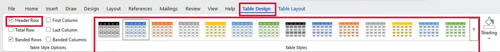</a>
<figcaption>Când cursorul e în tabel apare fila <b>Proiectare tabel</b> (Table Design): bifa <b>Rând antet</b> (Header Row) și galeria de <b>Stiluri de tabel</b> (Table Styles).</figcaption></figure>
<figure class="captura"><a href="../word-obiecte-vii/img/imbinare-celule.webp" target="_blank">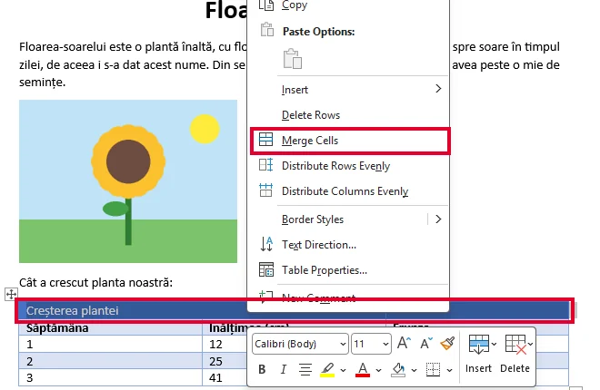</a>
<figcaption>Selectezi celulele primului rând, clic dreapta → <b>Îmbinare celule</b> (Merge Cells).</figcaption></figure>
<figure class="captura"><a href="../word-obiecte-vii/img/tabel-imbinat.webp" target="_blank">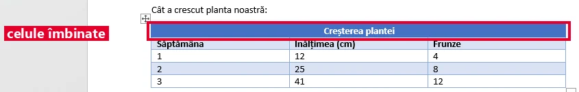</a>
<figcaption>Rezultatul: titlul stă pe un singur rând, <b>deasupra tuturor coloanelor</b>, iar dedesubt rămâne rândul de antet.</figcaption></figure>`,
qs:[
 {t:'choice',q:'Titlul „Rezultatele concursului” trebuie să stea deasupra celor 3 coloane, într-o singură căsuță. Ce faci?',o:['Îmbini celulele unui rând de deasupra','Scrii titlul în prima celulă, cu spații după el','Lărgești prima coloană cât tot tabelul','Ștergi coloana a doua și coloana a treia'],ok:0,why:'Celulele îmbinate devin o singură căsuță, lată cât toate coloanele. Spațiile se strică la prima schimbare de font, iar ștergerea coloanelor îți pierde datele.'},
 {t:'match',q:'Leagă fiecare problemă a tabelului de reparația ei.',pairs:[['Antetul nu iese în evidență','aldin sau fundal pe primul rând'],['Pe hârtie nu se văd liniile','pui borduri'],['Un nume lung nu încape','tragi linia dintre coloane'],['Titlul trebuie să acopere toate coloanele','îmbini celulele'],['Pe pagina 3 nu mai știi ce e în coloane','repeți rândul de antet pe fiecare pagină']],why:'Fiecare reglaj rezolvă o singură problemă. Dacă știi ce nu merge, știi și ce comandă cauți.'},
 {t:'tf',q:'Dacă îmbini toate celulele primului rând, numele coloanelor pot rămâne tot acolo, fiecare deasupra coloanei lui.',ok:false,why:'Fals. După îmbinare, rândul acela are o singură celulă, deci nu mai are loc pentru fiecare nume de coloană. De aceea titlul comun stă pe un rând separat, deasupra antetului.'},
 {t:'pagina',q:'Tabelul bibliotecii are nevoie de titlul „Cărți noi” deasupra tuturor coloanelor. Construiește-l: rânduri, coloane, antet și rândul cu celulele îmbinate.',
  parti:['tabel'],
  cere:{tabel:{cap:['Carte','Autor','Raft'],date:[['Amintiri din copilărie','Ion Creangă','A2'],['Micul prinț','Saint-Exupéry','B1'],['Cireșarii','Constantin Chiriță','A4']],titlu:'Cărți noi'}},
  start:{r:3,c:2},
  why:'Jocul a numărat: rândul îmbinat cu titlul, rândul de antet și câte un rând pentru fiecare carte. Coloanele sunt tot atâtea câte informații are fiecare carte.'},
 {t:'choice',q:'Tabelul cu notele are 3 pagini. Pe paginile 2 și 3 nu mai știi ce e în fiecare coloană. Ce reglaj ajută?',o:['Rândul de antet repetat pe fiecare pagină','Un font mai mic, ca tabelul să încapă pe o pagină','Borduri mai groase pe toate celulele tabelului','Coloanele puse în altă ordine, pe lățime'],ok:0,why:'Rândul de antet repetat pune numele coloanelor sus pe fiecare pagină, deci cititorul nu mai dă înapoi la prima pagină ca să vadă ce înseamnă cifrele.'}
]},
{t:'Pagina: orientare și margini',lectii:[7],continuturi:[PROG.formatare,PROG.specificatii],text:`
<p>Ultimul nivel de formatare este <mark>pagina</mark>. În școală folosim hârtie <strong>A4</strong>: 21 × 29,7 cm.</p>
<p><mark>Orientarea</mark> poate fi <strong>portret</strong> (foaia în picioare, lată de 21 cm) sau <strong>vedere</strong>, cum îi spune Word în română, adică „peisaj” (foaia culcată, lată de 29,7 cm). Un tabel cu multe coloane încape mai bine pe foaia culcată.</p>
<p><mark>Marginile</mark> sunt spațiul alb din jurul textului, de obicei 2–2,5 cm. O lucrare care se <strong>îndosariază</strong> are marginea din <strong>stânga</strong> mai mare, ca găurile să nu prindă textul.</p>
<p>Cât loc rămâne pentru text? Lățimea foii minus cele două margini: 21 − 2,5 − 2 = 16,5 cm.</p>
<p>Marginile și orientarea sunt pe fila <strong>Aspect</strong> (Layout): butonul <strong>Orientare</strong> (Orientation) și butonul <strong>Margini</strong> (Margins).</p>
<figure class="captura"><a href="../word-obiecte-vii/img/orientare.webp" target="_blank">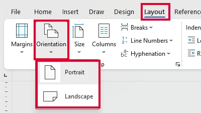</a>
<figcaption>Fila <b>Aspect</b> (Layout) → <b>Orientare</b> (Orientation): <b>Portret</b> (Portrait) sau <b>Vedere</b> (Landscape), adică foaia culcată.</figcaption></figure>
<figure class="captura"><a href="../word-obiecte-vii/img/margini.webp" target="_blank">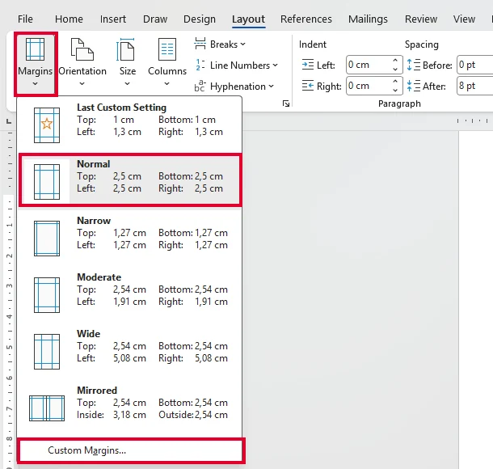</a>
<figcaption><b>Margini</b> (Margins): setul <i>Normal</i> are 2,5 cm pe toate laturile, iar <b>Margini particularizate</b> (Custom Margins), jos, le lasă să fie scrise exact.</figcaption></figure>`,
qs:[
 {t:'tf',q:'Pe orientarea portret, o foaie A4 e lată de 21 cm.',ok:true,why:'Adevărat. În picioare, latura scurtă (21 cm) e lățimea. Pe foaia culcată, lățimea devine latura lungă, de 29,7 cm.'},
 {t:'choice',q:'Foaie portret, margine de 3 cm în stânga și de 2 cm în dreapta. Cât loc rămâne pentru text, pe lățime?',o:['16 cm','21 cm','26 cm','19 cm'],ok:0,why:'Din lățimea foii scazi amândouă marginile: 21 − 3 − 2 = 16 cm. Dacă scazi doar una, ieși 19 cm, ceea ce e prea mult.'},
 {t:'classify',q:'Pe ce orientare se așază mai bine fiecare document?',cats:['Portret','Vedere'],items:[['Compunere de două pagini',0],['Tabel cu 8 coloane late',1],['Referat pus în dosar',0],['Pliant împăturit în trei, cu trei coloane',1],['Scrisoare către un prieten',0]],why:'Textul obișnuit se citește ușor pe foaia în picioare. Ce e lat, de exemplu multe coloane sau un pliant în trei, are nevoie de foaia culcată.'},
 {t:'pagina',q:'Orarul clasei are 6 coloane de câte 3,5 cm și se pune în dosarul clasei. Alege orientarea și marginile (între 2 și 3 cm, cu stânga mai mare), astfel încât tabelul să încapă între margini.',
  parti:['orientare','margini'],
  cere:{marg:[2,3],stangaMaiMare:true,tabel:{cap:['Ora','Luni','Marți','Mier.','Joi','Vineri'],date:[['8','Mate','Rom.','TIC','Engl.','Ist.'],['9','Rom.','Mate','Bio.','Fiz.','Mate'],['10','Geo.','Sport','Rom.','Mate','Muz.']],latCol:3.5}},
  start:{or:'portret',ms:2,md:2},
  why:'Jocul a calculat: tabelul are 6 × 3,5 = 21 cm, iar între margini rămâne lățimea foii minus cele două margini. Pe foaia în picioare nu ajunge niciodată, pe cea culcată ajunge.'},
 {t:'tf',q:'O lucrare care se îndosariază are nevoie de margine mai mare în dreapta.',ok:false,why:'Fals. Găurile dosarului se fac pe latura din stânga, deci acolo lași mai mult spațiu alb, ca să nu prindă textul.'}
]},
{t:'Antet, subsol și verificarea finală',lectii:[3,8],continuturi:[PROG.gestionare,PROG.reguli],text:`
<p><mark>Antetul</mark> și <mark>subsolul</mark> sunt zonele de sus și de jos care se <strong>repetă pe fiecare pagină</strong>: titlul lucrării, numele tău, <strong>numărul paginii</strong>. Le găsești pe fila Inserare. Nu le confunda cu rândul de antet al unui tabel. Numerele de pagină se pun <strong>automat</strong>, nu scriind cifra de mână.</p>
<p>Vrei să începi o pagină nouă? Apeși <kbd>Ctrl</kbd>+<kbd>Enter</kbd>, nu un șir de <kbd>Enter</kbd>-uri goale, care se mută când adaugi text.</p>
<p>Înainte să tipărești, apeși <kbd>Ctrl</kbd>+<kbd>P</kbd> (imprimare) și te uiți în <mark>previzualizare</mark>. Acolo vezi ce va vedea cititorul: a rămas o pagină cu două rânduri? Un titlu singur jos, cu textul lui pe pagina următoare?</p>
<p>La final salvezi cu <kbd>Ctrl</kbd>+<kbd>S</kbd>, iar cu <kbd>F12</kbd> (Salvare ca…) faci și o copie PDF.</p>
<figure class="captura"><a href="../word-obiecte-vii/img/antet-subsol-inserare.webp" target="_blank">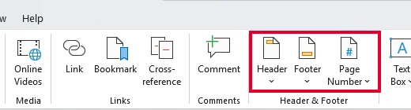</a>
<figcaption>Fila <b>Inserare</b> (Insert), grupul <b>Antet și subsol</b> (Header &amp; Footer): <b>Antet</b> (Header), <b>Subsol</b> (Footer), <b>Număr de pagină</b> (Page Number).</figcaption></figure>
<figure class="captura"><a href="../word-obiecte-vii/img/antet-subsol-pagina.webp" target="_blank">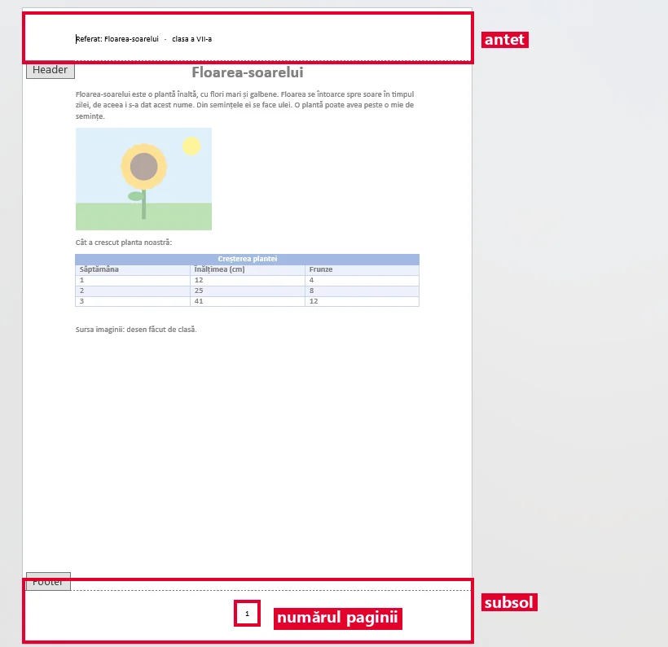</a>
<figcaption>Pagina în lucru: sus <b>antetul</b> (titlul referatului și clasa), jos <b>subsolul</b> cu <b>numărul paginii</b> pus automat.</figcaption></figure>
<figure class="captura"><a href="../word-obiecte-vii/img/previzualizare.webp" target="_blank">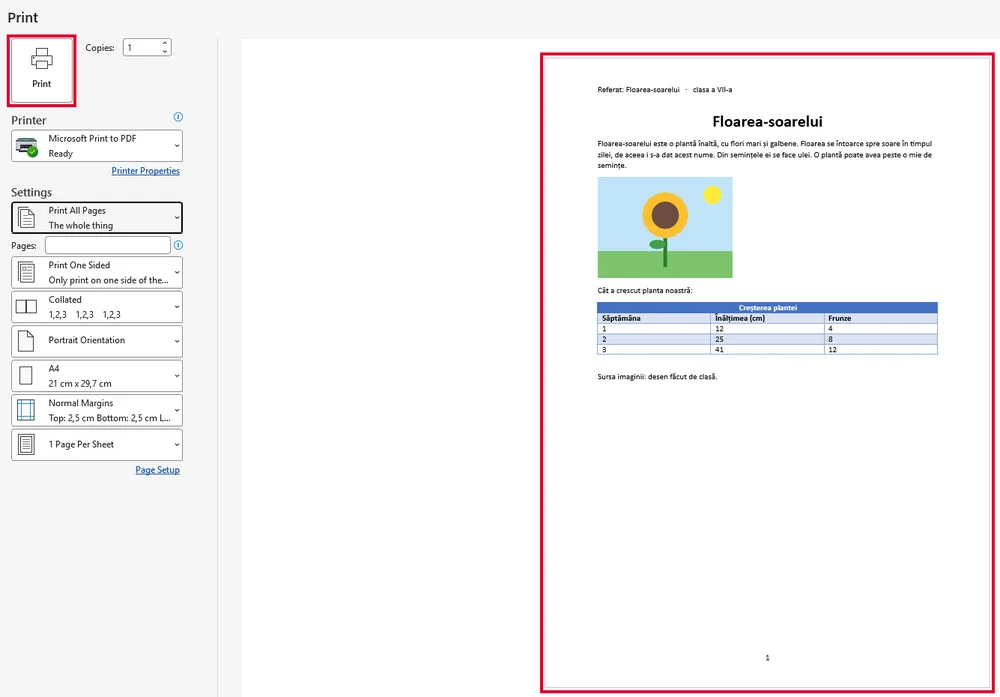</a>
<figcaption><kbd>Ctrl</kbd>+<kbd>P</kbd>: în dreapta, <b>previzualizarea</b> — exact ce va vedea cititorul, cu antet, tabel și numărul paginii.</figcaption></figure>`,
qs:[
 {t:'choice',q:'Unde pui numărul paginii, ca să apară singur pe fiecare pagină?',o:['În antet sau în subsol','Scris de mână, la finalul fiecărei pagini','În primul paragraf al lucrării','Într-un tabel, pe ultima pagină'],ok:0,why:'Antetul și subsolul se repetă pe fiecare pagină, iar numărul pus acolo se schimbă singur. Cifrele scrise de mână ajung în alt loc când adaugi text.'},
 {t:'choice',q:'Capitolul 2 trebuie să înceapă pe o pagină nouă. Ce faci?',o:['Ctrl + Enter înaintea titlului','Enter de multe ori, până sare pagina','Ctrl + S înaintea titlului','Spații până la capătul paginii'],ok:0,why:'Ctrl + Enter pune un sfârșit de pagină care rămâne la locul lui. Enter-urile goale se mută de îndată ce adaugi sau ștergi text mai sus.'},
 {t:'hunt',q:'Previzualizarea referatului lui Radu arată 4 greșeli de așezare. Apasă pe fiecare, apoi verifică.',
  src:'Pagina 1: titlul și primele două paragrafe. Jos, pe pagina 1, [[titlul „Concluzii” rămas singur|Un titlu nu rămâne singur la baza paginii, cu textul lui pe pagina următoare.]]. Pagina 2: concluziile și o fotografie cu legenda și sursa ei. Pagina 3: [[doar două rânduri|O pagină cu două rânduri se evită: strângi textul sau refaci așezarea.]]. Numerele paginilor sunt [[scrise de mână la finalul textului|Numerotarea se pune automat, în antet sau în subsol.]]. Marginile au 2,5 cm în stânga și 2 cm în dreapta. Pe pagina 2, un tabel [[iese peste marginea din dreapta|Nimic nu iese în afara marginilor.]].',
  indiciu:'Gândește-te la titluri, la paginile aproape goale, la numerotare și la margini.',
  why:'O pagină bine așezată nu are titluri rămase singure, pagini aproape goale sau obiecte ieșite din margini, iar numerele paginilor sunt puse automat.'},
 {t:'tf',q:'Previzualizarea consumă hârtie, așa că e bine s-o folosești cât mai rar.',ok:false,why:'Fals. Previzualizarea se vede doar pe ecran. E cea mai ieftină economie de hârtie, fiindcă prinzi greșelile înainte să tipărești.'},
 {t:'match',q:'Leagă scurtătura de ce face.',pairs:[['Ctrl + P','previzualizare și tipărire'],['F12','Salvare ca…'],['Ctrl + Enter','pagină nouă'],['Ctrl + S','salvare']],why:'Patru scurtături pentru finalul unei lucrări: o împarți pe pagini, o verifici, o salvezi și îi faci o copie în alt format.'}
]},
{t:'Diploma după specificații',final:true,lectii:[9],continuturi:[PROG.specificatii,PROG.formatare],text:`
<p><strong>Misiunea finală:</strong> faci diploma pentru „Concursul de lectură” al școlii. O <mark>specificație</mark> spune exact cum trebuie să arate documentul: pagina, fontul, imaginea, tabelul.</p>
<p>Specificația diplomei:</p>
<ul>
<li>foaie A4, cu orientarea în care încape tabelul;</li>
<li>marginile din stânga și din dreapta între 2 și 3 cm;</li>
<li>numele premiantului cu <strong>28 pt</strong>, aldin, centrat;</li>
<li>sigla școlii ca <strong>fundal discret</strong>, în spatele textului;</li>
<li>un tabel cu rezultatele: 4 coloane de câte 5,5 cm (Proba, Data, Punctaj, Premiul), un rând de antet și titlul „Rezultate”, pe un rând cu celulele îmbinate.</li>
</ul>
<p>La fel lucrezi la o scrisoare, o carte de vizită sau o felicitare: citești specificația, apoi o bifezi punct cu punct.</p>
<figure class="captura"><a href="../word-obiecte-vii/img/diploma-model.webp" target="_blank">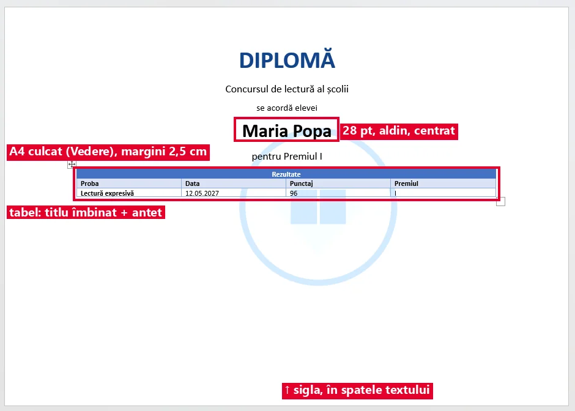</a>
<figcaption>Diploma-model, făcută după specificație: foaie <b>A4 culcată</b> (Vedere), numele la <b>28 pt</b> aldin și centrat, sigla <b>în spatele textului</b> și tabelul cu titlul pe un rând îmbinat.</figcaption></figure>`,
qs:[
 {t:'choice',q:'Tabelul diplomei are 4 coloane de câte 5,5 cm, adică 22 cm. Ce orientare alegi?',o:['Vedere, fiindcă foaia culcată are 29,7 cm','Portret, fiindcă e orientarea obișnuită','Portret, cu marginile puse la 1 cm','Portret, cu textul scris mai mărunt'],ok:0,why:'Foaia în picioare are doar 21 cm, deci 22 cm nu încap nici fără margini. Foaia culcată are 29,7 cm, iar după margini rămân peste 22 cm.'},
 {t:'pagina',q:'Așază diploma după specificație: orientarea, marginile, încadrarea siglei și tabelul cu rezultatele. Apoi verifică.',
  parti:['orientare','margini','imagine','tabel'],
  cere:{marg:[2,3],incadrare:['spate'],incadrareCe:'sigla e un fundal discret, așezat sub text',
    tabel:{cap:['Proba','Data','Punctaj','Premiul'],date:[['Lectură','12 mai','95','I'],['Rezumat','13 mai','88','II'],['Recitare','14 mai','90','I']],titlu:'Rezultate',latCol:5.5}},
  start:{or:'portret',ms:2,md:2,inc:'aliniat',r:2,c:2},
  why:'Jocul a verificat fiecare punct: a calculat dacă tabelul încape între margini, a comparat marginile cu intervalul cerut, a verificat încadrarea siglei și a numărat rândurile tabelului.'},
 {t:'classify',q:'Respectă specificația diplomei sau nu?',cats:['Respectă','Nu respectă'],items:[['Foaie A4 culcată',0],['Marginea din stânga de 1 cm',1],['Sigla în spatele textului, deschisă la culoare',0],['Tabel fără rândul de antet',1],['Titlul „Rezultate” pe un rând cu celulele îmbinate',0],['Sigla mărită din mijlocul laturii, turtită',1],['Numele premiantului scris cu 14 pt',1]],why:'Specificația se bifează punct cu punct. O margine prea mică, un font mai mic decât cel cerut, un antet lipsă sau o imagine deformată înseamnă că documentul nu e gata, chiar dacă restul arată bine.'},
 {t:'tf',q:'Specificația cere „tabel cu antet”. E respectată și dacă numele coloanelor sunt scrise într-un paragraf, sub tabel.',ok:false,why:'Fals. Antetul e primul rând al tabelului, deasupra datelor. Cititorul trebuie să afle ce e în coloane înainte să citească cifrele.'},
 {t:'choice',q:'Ai terminat diploma și vrei s-o trimiți dirigintei exact cum arată. Ce faci la final?',o:['Salvezi și o copie PDF, cu F12 (Salvare ca…)','Trimiți o fotografie a ecranului, făcută cu telefonul','Închizi documentul cu Ctrl + W, fără să salvezi','Tipărești direct, fără să te uiți în previzualizare'],ok:0,why:'Un PDF păstrează aspectul pe orice calculator. O fotografie a ecranului iese strâmbă, documentul nesalvat se pierde, iar fără previzualizare nu vezi dacă pagina a ieșit bine.'}
]}
];

JocMotor.porneste({
  cheie:'joc_word_obiecte_vii',
  titlu:'Misiunea Machetă',
  marca:'Misiunea <b>Machetă</b>',
  h1:'Misiunea <em>Machetă</em>',
  clasa:'a VII-a',
  unitate:'VII-U1',
  unitateTitlu:'Tehnoredactare: editorul de texte',
  competente:['CS.1.1','CS.3.1'],
  lectii:'3, 4, 7, 8, 9',
  intro:'Șapte niveluri despre ce pui într-un document în afară de text: imagini, tabele și pagina însăși. La fiecare nivel citești o pagină scurtă și răspunzi la întrebări. De patru ori așezi singur o foaie sau un tabel, iar jocul verifică dacă respectă cerința. La final faci o diplomă după specificații și îți iei propria diplomă.',
  banda:'<span class="mz l"></span><span class="tx"><span>1</span><span>2</span><span>3</span><span>4</span><span>5</span><span>6</span><span>7</span><span>8</span><span>9</span><span>10</span><span>11</span><span>12</span><span>13</span><span>14</span><span>15</span><span>16</span><span>17</span></span><span class="mz r"></span>',
  nivele:LEVELS,
  tipuri:{pagina:JocPagina},
  diploma:{
    titlu:'Arhitect de pagină',
    rezumat:'obiecte într-un document, încadrarea imaginii, tabele cu antet și celule îmbinate, orientarea și marginile paginii, verificarea înainte de tipărire și o diplomă după specificații',
    aplicatie:'editorul de texte de la clasă',
    provocare:[
      'Deschide un document nou și pune foaia A4 pe orientarea vedere (peisaj), cu marginile între 2 și 3 cm.',
      'Inserează un tabel cu rezultatele unui concurs inventat: 4 coloane, un rând de antet, 3 rânduri de date și un rând de titlu cu celulele îmbinate.',
      'Adaugă o imagine desenată de tine (sau una cu sursa scrisă), mărită din colț, cu încadrarea potrivită.',
      'Deschide previzualizarea cu <kbd>Ctrl</kbd>+<kbd>P</kbd> și verifică: nimic nu iese din margini, nicio pagină nu e aproape goală.',
      'Salvează ca <code>Nume_Prenume_diploma.docx</code> în folderul clasei și fă și o copie PDF.'
    ]
  }
});
</script>
</body>
</html>
